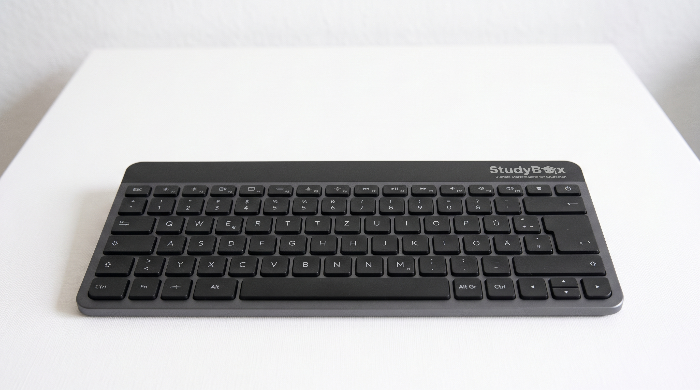

Das Medien & Gestaltung Bundle wurde speziell für kreative und
mediennahe Studiengänge entwickelt. Es unterstützt dich bei
Grafikdesign, Bildbearbeitung, Videoprojekten, Content Creation,
digitalen Medienproduktionen sowie der Entwicklung kreativer Konzepte.
Bundlepreis: 1.249,99 €
Notebook
Das Notebook bildet die zentrale Arbeitsplattform des Bundles.
Es eignet sich für Bildbearbeitung, Grafikdesign,
Videobearbeitung, Layoutgestaltung und kreative Projekte.
Ideal für Adobe Creative Cloud Anwendungen
Flüssiges Arbeiten mit Bild- und Videodateien
Perfekt für kreative Projektarbeiten
Mobiles Arbeiten an Hochschule und Zuhause
Monitor
Der große Monitor ermöglicht präzises Arbeiten an Layouts,
Grafiken, Videos und digitalen Designs. Die zusätzliche
Arbeitsfläche sorgt für mehr Übersicht während kreativer Projekte.
Mehr Platz für kreative Anwendungen
Ideal für Bild- und Videobearbeitung
Präzise Bearbeitung von Designs
Perfekt für Multitasking
Tablet
Das Tablet eignet sich hervorragend für Skizzen,
Storyboards, digitale Notizen, Moodboards und kreative Ideen.
Perfekt für kreative Entwürfe
Digitale Notizen und Skizzen
Mobiles Arbeiten unterwegs
Ideale Ergänzung zum Notebook
Tablet-Stift
Der Eingabestift ermöglicht präzises Zeichnen,
Illustrieren und Bearbeiten digitaler Inhalte.
Er eignet sich ideal für kreative Entwürfe und Designs.
Perfekt für digitale Zeichnungen
Ideal für Illustrationen und Konzepte
Präzise Eingabe für Designarbeiten
Natürliches Schreib- und Zeichengefühl
Kabellose Tastatur

Die Tastatur unterstützt das komfortable Erstellen von
Präsentationen, Projektberichten, Konzepten und kreativen
Dokumentationen.
Angenehmes Tippgefühl
Kabellose Verbindung
Ideal für längere Schreibarbeiten
Perfekt für Studienprojekte
Kabellose Maus
Die ergonomische Maus ermöglicht präzises Arbeiten in
Designprogrammen und unterstützt einen effizienten Workflow
bei kreativen Projekten.
Präzise Steuerung
Ideal für Grafik- und Layoutprogramme
Ergonomisches Design
Komfortables Arbeiten über viele Stunden
Dockingstation
Die Dockingstation verbindet Monitor und weitere Geräte
über eine zentrale Schnittstelle und unterstützt
professionelle kreative Arbeitsplätze.
Anschluss mehrerer Geräte gleichzeitig
Ideal für Monitore und Peripherie
Flexibles Arbeiten im Studio oder Homeoffice
Aufgeräumter Arbeitsplatz
Externe Festplatte
Bilder, Videos, Designs und Projektdateien benötigen oft
viel Speicherplatz. Die externe Festplatte bietet ausreichend
Kapazität für kreative Arbeiten und wichtige Backups.
Sicherung wichtiger Medienprojekte
Speicher für hochauflösende Bilder und Videos
Ideal für kreative Projektarchive
Schnelle Datenübertragung über USB-C
Perfekt für Studium und Praxisprojekte
Laptoptasche
Die gepolsterte Laptoptasche schützt Notebook und Zubehör
beim Transport zwischen Hochschule, Studio, Agentur und Zuhause.
Optimaler Schutz für kreative Hardware
Robustes Material
Praktisch für Hochschule und Projekte
Perfekt für den kreativen Studienalltag
Warum dieses Bundle?
Kreative Studiengänge arbeiten häufig mit Grafikprogrammen,
Videosoftware, Präsentationen und umfangreichen Projektdateien.
Das Medien & Gestaltung Bundle bietet die notwendige Ausstattung,
um kreative Ideen professionell umzusetzen und Projekte effizient
zu bearbeiten.